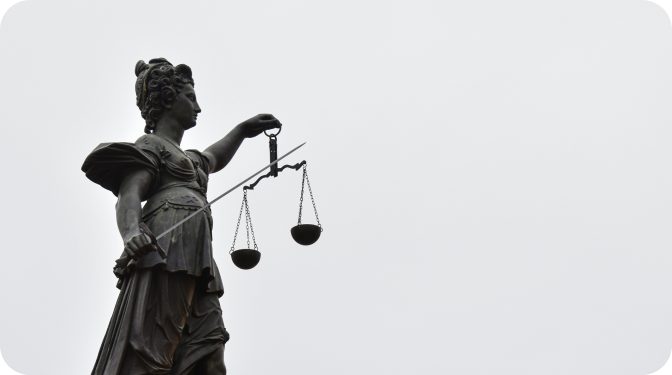

동국산업㈜는 경영이념 및 목표 실현을 위해 임직원 각자가 지켜야 할 바람직한 행동과 가치판단의 기준을 정립하고 공정하고 투명한 경영을 위해 다음과 같은 윤리강령을 제정한다.
동국산업(주)는 올바른 기업문화를 창출하고, 신뢰받는 기업으로 발전해 나가기 위하여 임직원의 업무수행과 기업 활동에
있어
의사결정과 가치판단의 기준이 되는 윤리행동지침을 제정하여 공정하고 합리적인 업무수행의 원칙으로 삼는다.
직무를 수행함에 있어 적법성과 타당성 그리고 신의성실의 원칙에 입각하여 건전한 상식과 양심에 따라 공정하고 투명하게 처리하여야 한다.